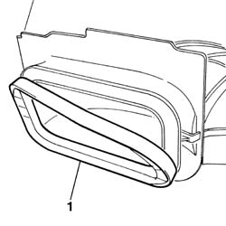
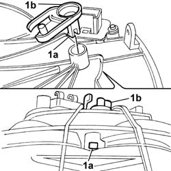
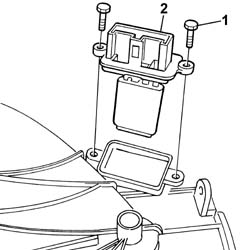
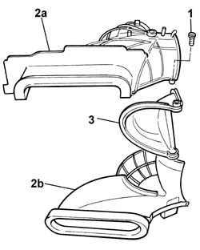

5020A74 air intake and recirculation flap fan/flap, l.h. or r.h.-dismantle and rebuild
- Path
- Procedures > 50 AUXILIARY UNITS > 5020 HEATER > 5020A box and components > 5020A74 air intake and recirculation flap fan/flap, l.h. or r.h.-dismantle and rebuild
- Kind
- repair procedure (removal / refitting; the operation number is the code)
- Applies to
- all engines; all production periods
- Interactive page
- https://sloeber94.github.io/elrnDB-fPnd/en/#/2752871
Applies to: all engines; all production periods
 Removing
Removing
 Refitting
Refitting1. Partly release the weatherstrip using a suitable tool.

Applies to: all engines; all production periods
1. Work on the clip (1a) and remove the air intake and recirculation flap control lever (1b).

Applies to: all engines; all production periods
1. Undo retaining bolts
2. Remove the air conditioning fan resistor.

Applies to: all engines; all production periods
1. Undo the retaining bolts.
2. Separate the half casings (2a) and (2b).
3. Remove the air intake and recirculation flap.

Applies to: all engines; all production periods
Refitting
RemovingPosition the air intake and recirculation flap between the two half casings and tighten the fixing bolts.
Place the air intake and recirculation flap in position and check that it is secure.
Check the condition of the weatherstrip and, if necessary, replace it.
Place the weatherstrip in position.